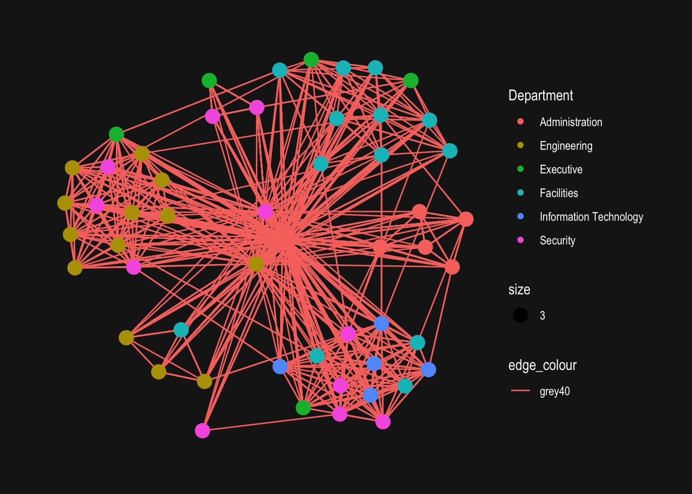
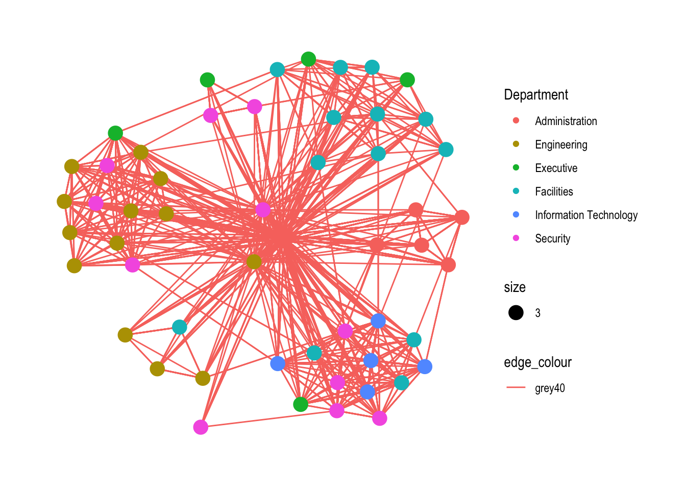

Warning: There was 1 warning in `mutate()`.
ℹ In argument: `SendDate = dmy(SentDate)`.
Caused by warning:
! All formats failed to parse. No formats found.Hands-on Exercise
Weekly In-class work
Hands-on 8 - Network Data
Download Data:
Data Wrangling:
Simple Plotting:
# A tbl_graph: 54 nodes and 1456 edges
#
# A directed multigraph with 1 component
#
# Edge Data: 1,456 × 4 (active)
from to Weekday Weight
<int> <int> <ord> <int>
1 40 41 Tuesday 23
2 40 43 Tuesday 19
3 41 43 Tuesday 15
4 41 40 Tuesday 14
5 42 41 Tuesday 13
6 42 40 Tuesday 12
# … with 1,450 more rows
#
# Node Data: 54 × 4
id label Department Title
<dbl> <chr> <chr> <chr>
1 1 Mat.Bramar Administration Assistant to CEO
2 2 Anda.Ribera Administration Assistant to CFO
3 3 Rachel.Pantanal Administration Assistant to CIO
# … with 51 more rowsWarning: Using the `size` aesthetic in this geom was deprecated in ggplot2 3.4.0.
ℹ Please use `linewidth` in the `default_aes` field and elsewhere instead.
Beautify it with the fun part - with a variety available.. nicking an image from Prof Kam below;


